Other Projects
Selected design, fabrication, mechanical, and embedded-systems projects completed throughout my time in the Digital Maker and Fabrication program at the University of Advancing Technology.
Project Portfolio Overview
The projects on this page provide supporting evidence for the six Digital Maker and Fabrication program objectives. Each project documents the process of moving from an initial idea or assigned problem through design, prototyping, testing, revision, and final evaluation.
Project C2: Capillary Canopy is documented separately on the SIP page.
Perpetual Planter
Course: DBM215
Boards Objectives: Objective 1 and Objective 6
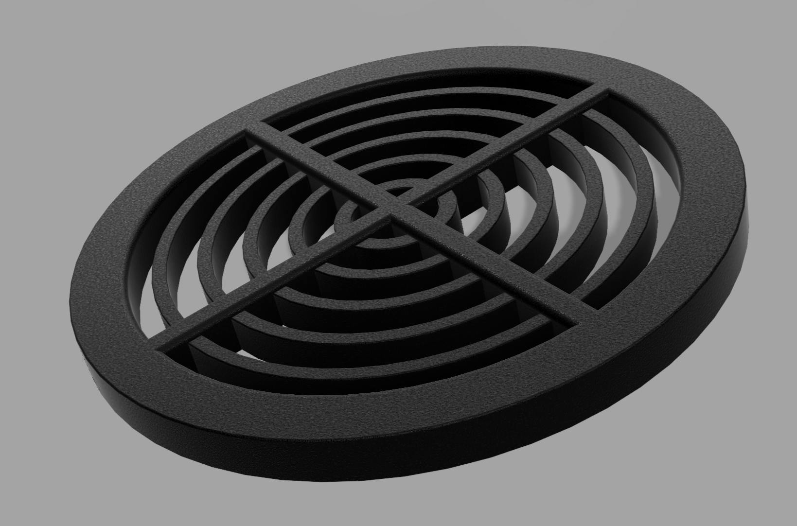
Fusion 360 model of the Perpetual Planter insert.
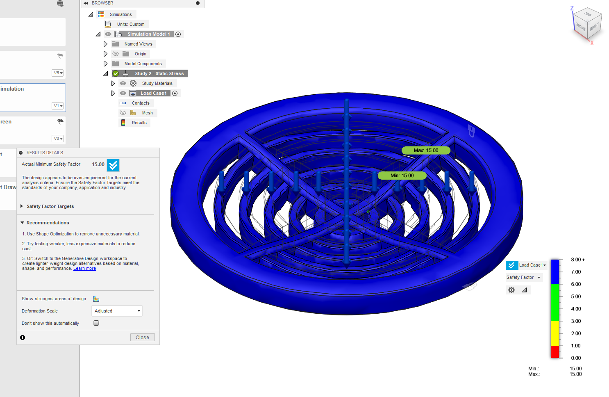
Structural simulation used to evaluate the insert's strength.
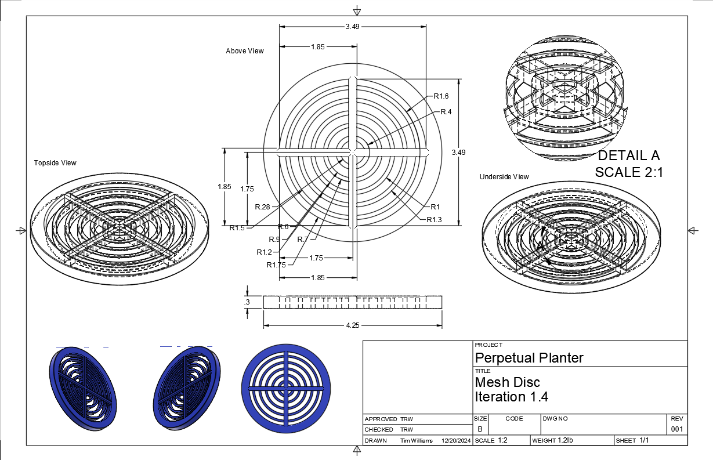
Dimensioned drawing documenting the insert geometry.
Physical Prototype
A photograph of the printed insert or the insert installed inside a planter will be added after final physical documentation is completed.
Status: Image pending.
Project Overview
The Perpetual Planter is a reusable insert designed to convert a standard six-inch planter into a passive water reservoir. The purpose of the design is to reduce accidental overwatering, underwatering, and root rot without requiring the user to purchase a completely new planter.
The insert creates a separated lower reservoir while supporting the growing medium above it. Water remains available beneath the plant rather than collecting directly around the roots. The design was intended to be removable, reusable, and compatible with common planters.
Design and Development
Fusion 360 was used to create the insert, internal mesh structure, support geometry, and overall dimensions. Multiple mesh-disc versions were developed as the design was refined. The project also included structural simulation to evaluate how much load the insert could support and whether the part contained more material than necessary.
The simulation produced a high safety factor, which showed that the part was structurally stronger than required. That result created a clear path for future versions that use less material, reduce printing time, and maintain the required strength.
Patent Readiness
The Perpetual Planter was developed as an original functional product with a defined problem, solution, manufacturing method, use case, and set of alternative configurations. The project includes CAD models, dimensional documentation, simulation results, product applications, and future technical variations.
This documentation provides the foundation needed to prepare the prototype for a technology patent application. Future versions could be produced in different diameters, heights, materials, mesh configurations, and reservoir capacities.
Agile and MVP Development
The first minimum viable product focused on the core function: providing a passive reservoir insert that could be placed inside an existing planter. More complex features were separated from the initial build so that the basic concept could be evaluated first.
Proposed future additions include a water-level sensor, soil-moisture sensor, temperature monitoring, LED status indicators, and communication between multiple planters. These features represent later development stages rather than requirements for the initial MVP.
Tools and Techniques
- Fusion 360 CAD modeling
- Parametric dimensions
- Structural simulation
- Additive-manufacturing preparation
- Iterative prototype development
- MVP feature planning
- Patent-readiness documentation
Lessons Learned
The simulation showed that a successful product is not only one that is strong enough to work. A design can also be too strong for its intended application, resulting in unnecessary material use, longer print times, and higher production costs. Future versions can reduce the amount of material while preserving the support required for soil and plant weight.
Future Development
- Reduce unnecessary material identified by simulation
- Test the insert inside several commercially available planters
- Compare PLA, PETG, and water-resistant materials
- Develop additional sizes and reservoir depths
- Add optional electronic monitoring
- Create a finalized patent-readiness packet
Screw School / Screw Stack
Course: DBM150
Boards Objectives: Objective 2 and Objective 4
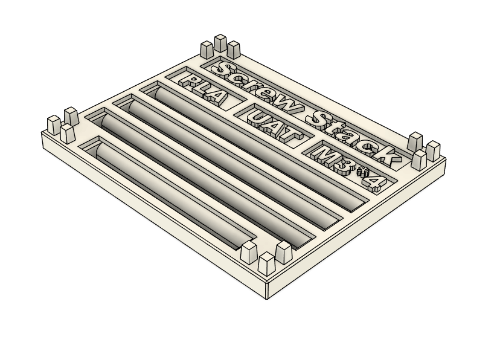
Fusion 360 design for the stackable screw-storage system.
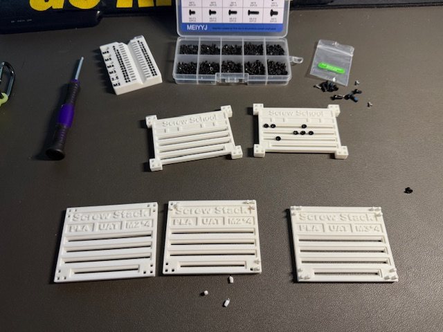
Printed prototypes produced during development.
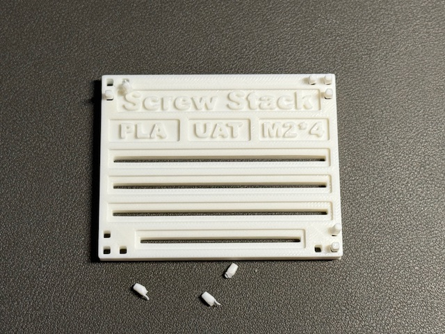
An early prototype showing weak connection points that required revision.
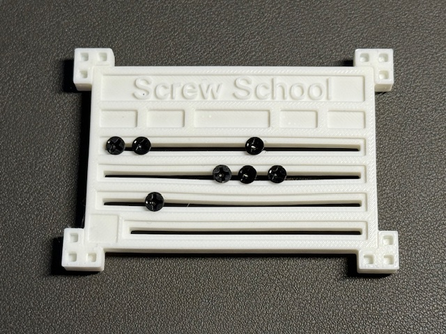
Completed Screw Stack tested with actual hardware.
Project Overview
Screw Stack is a modular storage system designed to organize leftover screws by size. Each tray contains openings sized for a specific screw diameter and can be stacked with other trays. The design reduces the need for multiple snap-lid containers and prevents several screw sizes from being mixed together if a container is dropped.
Design and Manufacturing
The trays were designed in Fusion 360 and manufactured on a Bambu P1P. The system included screw openings, printed labels, stacking pegs, and removable connection pieces. Multiple physical versions were printed and tested with actual hardware.
Material and Technique Evaluation
PLA and PETG were considered for the finished product. The material needed enough flexibility to accept screws without cracking while remaining durable during repeated use. The project also compared 3D printing with CNC manufacturing as a possible method for producing larger quantities.
Problems and Revisions
- Some pegs were lost because the geometry was not connected before extrusion
- Small labels disappeared after slicing
- Slot geometry needed a deeper fillet
- Different screw sizes created different stress points
- Future versions need deeper trays for longer screws
Tools and Techniques
- Fusion 360
- Bambu Studio
- Bambu P1P
- PLA and PETG evaluation
- Additive manufacturing
- Fit and assembly testing
DBM 100 Plane
Course: DBM100
Boards Objectives: Objective 3 and Objective 4
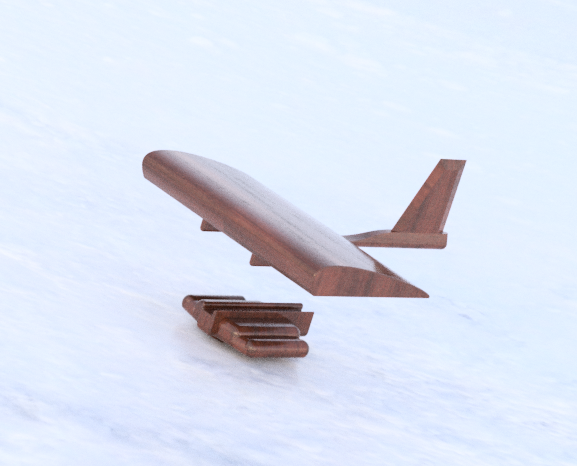
Main Fusion 360 view of the assembled glider.
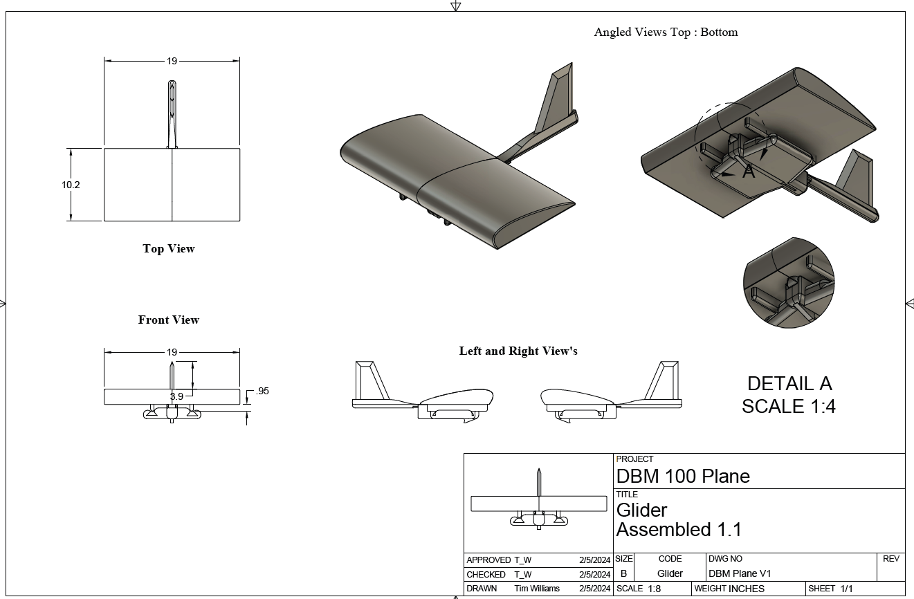
Assembled technical drawing showing the glider dimensions and components.
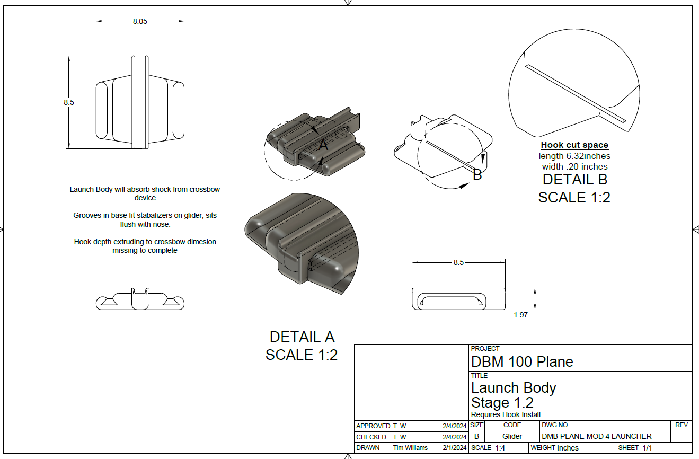
Technical drawing of the launcher body and glider alignment features.
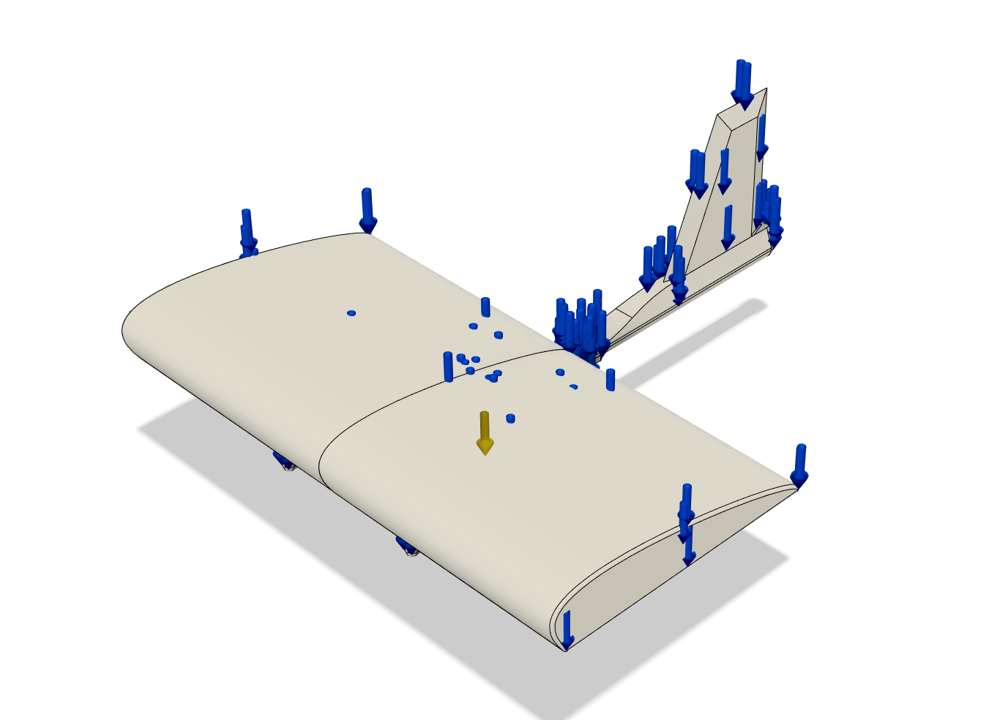
Simulation or failure analysis used to identify structural concerns.
Project Overview
The DBM 100 Plane is a modular 3D-printed glider developed around aerodynamic shape, assembly, manufacturability, and launcher integration. The design includes separate wings, a connector beam, a tail assembly, stabilizers, and a launcher body.
Form and Function
The glider had to maintain an aerodynamic form while remaining printable and easy to assemble. The wing shape, stabilizers, tail, and overall proportions were designed around flight performance, while the modular construction allowed the parts to fit within the available print area.
Materials and Build Techniques
The project required decisions about component orientation, joining methods, strength, weight, wall thickness, and how launch forces would move through the printed structure. Digital simulation was used to identify possible stress concentrations and likely failure points.
Tools and Techniques
- Fusion 360
- Technical drawings
- Component-based assemblies
- Aerodynamic design
- Structural simulation
- Additive-manufacturing planning
Dozer Mouse
Course: TCH270
Boards Objectives: Objective 3 and Objective 5
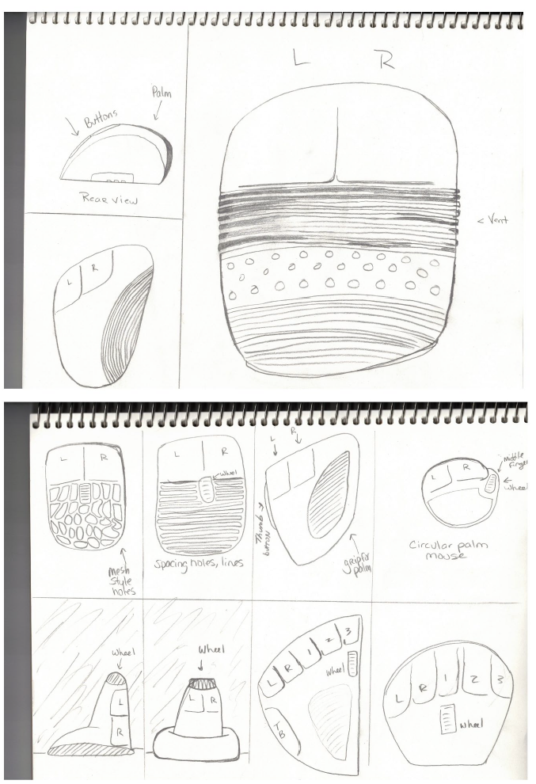
Original concept sketches used to develop the construction-equipment theme.
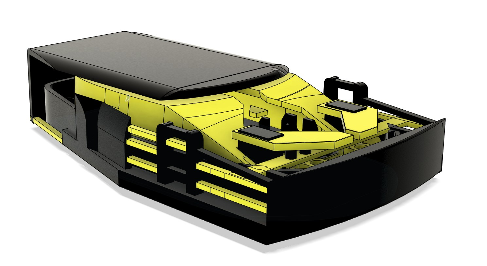
Fusion 360 model showing the custom mouse enclosure design.
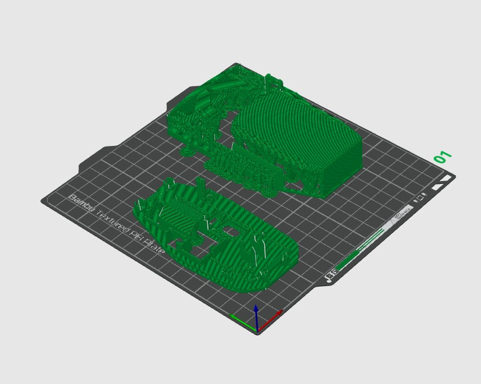
Printed mouse components before final electronics assembly.
Completed Mouse
A photograph of the completed mouse will be added after the final enclosure parts are printed and the electronics are installed and tested.
Status: Final printing and assembly pending.
Project Overview
The Dozer Mouse is a custom computer-mouse enclosure designed around a Bambu Lab wireless mouse electronics kit. The project combines construction-equipment styling with a functional electronic input device.
Form and Human Factors
The design deliberately moved away from the smooth, minimal form used by most computer mice. Track-inspired textures, exposed mechanical shapes, contrasting colors, and a wrist-support concept created a product intended to feel different while still allowing access to the buttons, scroll wheel, and grip surfaces.
Electronics Integration
The enclosure was designed around the required circuit board, optical sensor, scroll wheel, switches, battery connection, and USB receiver. Internal clearances, mounting locations, openings, and moving surfaces had to align with the electronic hardware.
Status: Final electronics assembly and functional demonstration are pending.
Tools and Techniques
- Fusion 360
- Bambu Studio
- 3D printing
- Electronic component fitment
- Human-factors evaluation
- Prototype iteration
Four-Gear Mechanism
Course: RBT205 — Mechanisms and Materials
Boards Objective: Objective 2
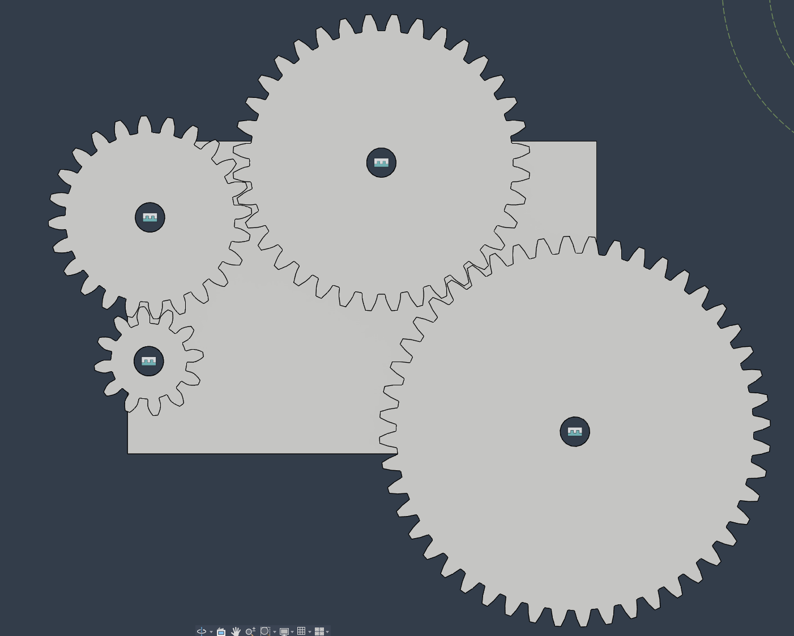
Fusion 360 view showing the four gear sizes used in the mechanism.
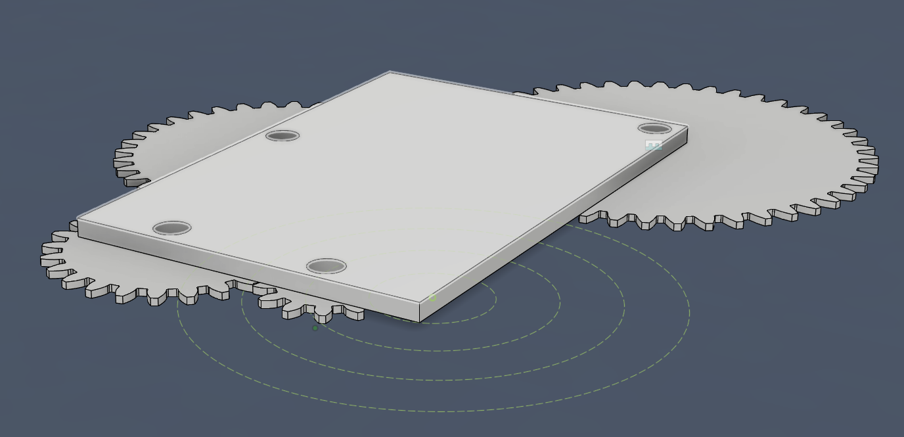
Mounting plate and calculated gear-spacing layout.
Complete Assembly
A photograph of the fully printed and assembled gear mechanism will be added after manufacturing is completed.
Status: Printing pending.
Motion Test
A video still showing the operating mechanism will be added after the motion test is recorded.
Status: Filming pending.
Project Overview
The Four-Gear Mechanism is a working mechanical assembly containing gears with 12, 24, 36, and 48 teeth. The gears were created as separate components and arranged on a custom mounting plate.
Mechanical Design
The mounting locations were calculated by combining the radii of adjacent gears. This established the center distance required for the teeth to engage correctly. The completed system produced an overall 1:4 gear relationship.
Tools and Techniques
- Fusion 360 gear creation
- Mechanical spacing calculations
- Component assemblies
- Joint and motion setup
- Gear-ratio evaluation
- Functional mechanism testing
Gaia ESP32 Enclosure Monitor
Project Type: Independent embedded-systems project
Boards Objective: Objective 5
Components
A photograph of the ESP32, temperature sensor, OLED, resistor, and wiring will be added here.
Status: Image pending.
Breadboard Test
A photograph of the working breadboard circuit will be added after testing.
Status: Build pending.
Fusion 360 Housing
The custom monitor housing will be added after it is designed.
Status: Design pending.
Working Monitor
A photograph of the completed monitor displaying temperature will be added after final assembly.
Status: Final build pending.
Project Overview
The Gaia ESP32 Enclosure Monitor is a compact environmental-monitoring node intended for use with a terrarium or bioactive enclosure. The first MVP measures temperature and displays the current reading locally.
Embedded System
The system uses an ESP32-WROOM-32 microcontroller, a DS18B20 digital temperature sensor, and a 0.96-inch SSD1306 OLED display. The ESP32 receives the sensor reading, processes the information through embedded code, and displays the current temperature on the OLED.
Planned Enclosure
A compact Fusion 360 housing will be developed around the ESP32 and OLED. The sensor will extend outside the enclosure so that it can be positioned inside the terrarium while the main electronics remain protected and accessible.
Current Status
Build pending. The required components are available. The next steps are breadboard testing, code development, OLED output testing, housing design, final assembly, and a short functional demonstration.
Components
- ESP32-WROOM-32
- DS18B20 temperature sensor
- SSD1306 128×64 OLED display
- Pull-up resistor
- USB power
- Custom Fusion 360 housing
Future Development
- Add humidity monitoring
- Add microSD data logging
- Add soil-moisture monitoring
- Add relay-controlled environmental equipment
- Add LoRa communication between enclosure nodes
- Connect multiple nodes to the Gaia dashboard
Project C2: Capillary Canopy
Project C2 is documented separately because it serves as the completed Student Innovation Project and contains a full development timeline, testing results, technical drawings, and final SIP documentation. It supports Objective 1 through the development of a patent-ready engineered prototype and Objective 6 through its use of Agile development, iterative testing, and a minimum viable product approach.